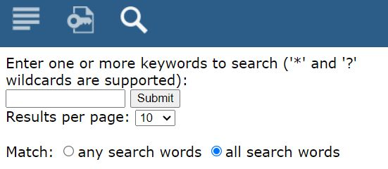

Інформація про документ
Даний документ є розробленим Керівництвом користувача з оцінки, вибору та визначення засобів контролю безпеки для інформаційних систем,
які обробляють, зберігають або передають державну інформацію, у відповідності до стандарту NIST SP 800-53 Revision 3 (надалі - Керівництво).
Оцінка, вибір та визначення засобів контролю безпеки для інформаційних систем, які обробляють, зберігають або передають державну інформацію, у відповідності до NIST SP 800-53 Revision 3 - це віповідна підсистема у CSET.
Даний документ є складовою частиною зазначеної підсистеми.
Головна сторінка CSET
Про правовласника
Адаптація та локалізація на українську мову підсистеми NIST SP 800-53 Revision 3, розробка Керівництва користувача здійснена ТОВ "СОФТЛІСТ" (надалі - Локалізатор, Розробник), м. Київ, 2023-2024 р.р. © Всі права захищені.
Розробником зазначеного Керівництва користувача (надалі – Керівництво) є ТОВ "СОФТЛІСТ" (надалі - Розробник), м. Київ, 2023-2024 р.р. © Всі права захищені.
У відповідності до чинного законодавства України у сфері інтелектуальної власності, дане Керівництво не належить повному або частковому відтворенню без попередньої письмової згоди Розробника: ніяка частина цього документа не може бути скопійована, відтворена в будь-якій формі та/або змінена.
Передача третім особам
Тільки для внутрішнього використання.
Заборонена передача третім особам та комерційна реалізація.
За додатковою інформацією необхідно звертатись за адресою: order@softlist.ua.
Середовище розробки
Документ підготовлено у редакторі для створення довідкової системи Help & Manual версії 9.3.0. Версія англомовна.
Підтримка української мови в інтерфейсі розробником не передбачена.
Використано запропонований зазначеним редактором дизайн, яким підтримується формат публікації у Web (Webhelp/HTML 5).
Пояснення до можливостей верхньої панелі навігації:
Верня панель навігації
Здійснюється перехід на офіційний сайт розробника редактора Help & Manual |
|
|
Здійснюється перехід до змісту розділів керівництва |
Ключові слова для пришвидшення пошуку у документі. Якщо такі слова не згенеровані, інформація не відображається. |
|
Здійснюється виклик функціоналу для здійснення пошуку:  Форма для здійснення пошуку інформації у документі
Пояснення: у пошуковому рядку введіть пошукове слово або словосполучення чи речення (підтримуються символи "*" та "?") натисніть на кнопку [Submit]. За замовчуванням виводиться до 10 знайдених елементів на сторінку. Для зміни виберіть необхіднне значення (10, 20, 50, 100) з випадаючого списку параметрів "Result pet page:". Підтримується пошук будь-якого пошукового слова (активація "any search word") та для всіх слів/словосполучення чи речення (активація "all search words").
|
|
Перехід до попереднього розділу |
|
Перехід до наступного розділу |
|
Перехід до головного розділу/підрозділу |
|
Navigation: »No topics above this level« - Навігація: «Немає тем вище цього рівня» |
|
Кнопки розгортання/згортання розділів (підрозділів)
|
|

{kind=link}
підготовлено у редакторі Help & Manual 9.3.0